Hot gases don't rise
Without gravity, hot gas doesn't rise, so flames turn round and dim. [5]
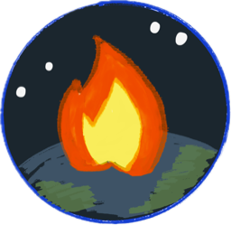
FLAMMAFLAMMA
Explore NASA's fire experiments in space: ask questions, test conditions, and compare investigations.
Spacecraft fire safety
NASA's microgravity fire research, made easy to find, compare and understand.
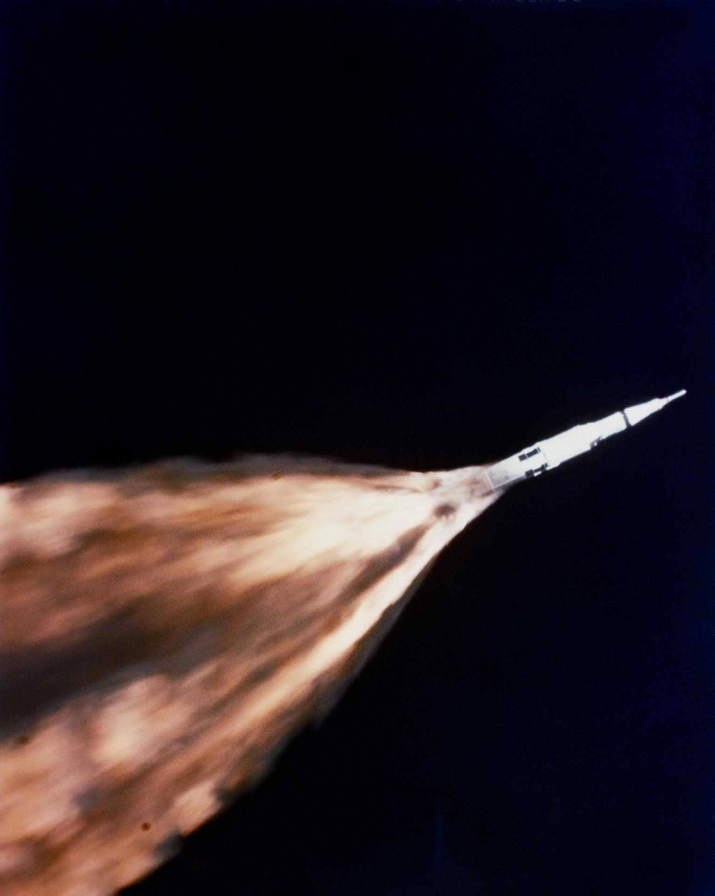
images.nasa.gov · S68-27365For decades, NASA has burned materials in microgravity to learn how fire really behaves in space. The results are scattered across many experiments and reports, just as crews prepare to return to the Moon and head to Mars. Flamma brings them together in one place, so anyone can search, compare and understand them, and turn them into fire safety insights.
Created by orchidmanta for the NASA Space Apps Challenge 2026 · Kuala Lumpur, Malaysia
I also build more cool projects. Connect with me here!
See my projectsFlamma is an independent student project by orchidmanta, made for the NASA Space Apps Challenge 2026 for education only. It is not affiliated with or endorsed by NASA, JAXA or any other organisation. All images, data and texts belong to their owners and are credited and linked to their sources; if anything should be corrected or removed, please get in touch ↗.
01 · The problem
Without gravity, hot gas doesn't rise, so flames turn round and dim. [5]
Fuel, oxygen and ignition are all on board, often with extra oxygen and nowhere to escape. [5]
Smoke particles differ in microgravity, so Earth smoke detectors can miss them. [5]
Planned habitats use more oxygen at lower pressure, where test flames kept burning even without airflow. [6]
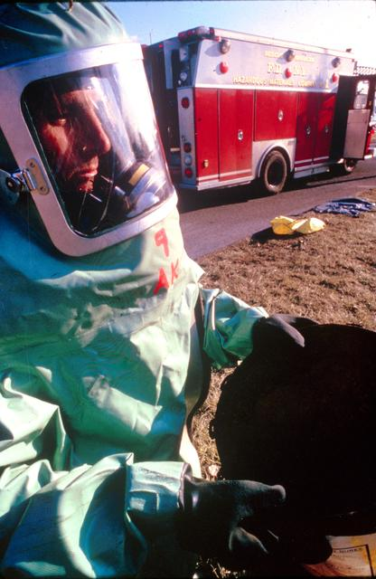
images.nasa.gov · 940429202 · The approach
Every fire-safety measure on a spacecraft fits one of three pillars.
03 · History
A flash fire in the 100% oxygen cabin killed the crew during a launch-pad test.
Lesson: Faster hatches, fewer flammable materials, fire-resistant suits. [1]
On Jan. 27, 1967, Gus Grissom, Ed White and Roger Chaffee were in a launch-pad test with the hatches closed and the cabin pressurized with 100% oxygen. A flash fire swept through the command module so quickly there was no time to open the hatches.
The crew died from carbon monoxide and other toxic gases; their burns were likely survivable. The three-piece hatch took 90 seconds to open under ideal conditions and could not be opened under the rising pressure.
The review board found evidence of arcing in wiring near the environmental control system, but could not pin down a single ignition source.
What changed: a single hatch that opens in three seconds, strict limits on combustible materials (also in the lunar module), new spacesuits made of fire-resistant materials, and the redesigned Block II spacecraft.
Read the full account in NASA's Apollo 1 case study ↗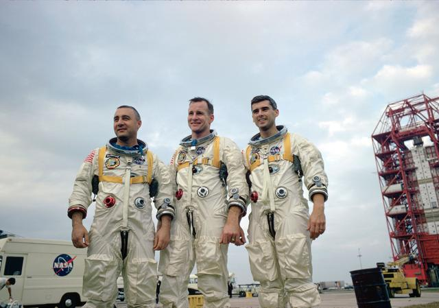
images.nasa.gov · S67-19770An overheated oxygen tank exploded on the way to the Moon; the crew survived in the lunar module.
Lesson: Redesigned oxygen tanks and protected wiring. [2]
In 1965 the oxygen-tank heaters were changed from 28 to 65 volts, but their thermostatic switches were not. In a pad test the heaters stayed on for hours and reached about 1,000 °F, damaging the Teflon insulation inside tank number two.
On the third day of the mission the tank exploded and damaged tank number one. The crew moved into the lunar module Aquarius as a lifeboat, adapted carbon-dioxide filters with Mission Control's help, and splashed down safely.
What changed: a third oxygen tank in a separate bay, upgraded thermostats, no stirring fans inside the tanks, and all wiring sheathed in stainless steel.
Read the full account in NASA's Apollo 13 case study ↗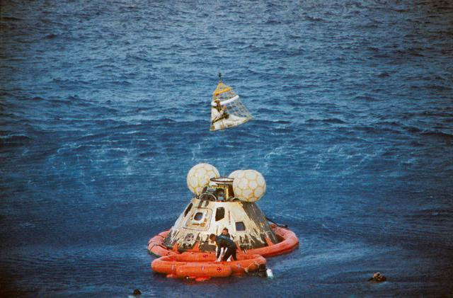
images.nasa.gov · S70-35651An oxygen generator caught fire aboard the station; the crew survived.
Lesson: Lessons carried into the ISS. [3]
On Feb. 24, 1997, a solid-fuel oxygen generator in Mir's Kvant-1 module caught fire. The multinational crew, including NASA astronaut Jerry Linenger, survived.
The extensive damage made it difficult to analyse the fire's cause.
What changed: the lessons learned were passed on to the design and operation of the International Space Station.
Read the full account in NASA's article on the Mir fire ↗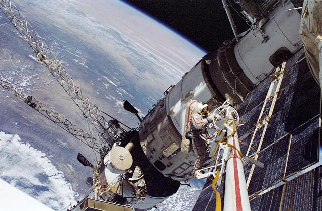
images.nasa.gov · NM23-48-003The smoke alarm went off near the end of the mission. "You want to get somebody's attention really quick, make the fire alarm go off… 80,000 miles from home." (Commander Reid Wiseman) [4]
Near the end of the mission, the smoke alarm in the Orion spacecraft went off. Commander Reid Wiseman later described it with the quote above.
It is a reminder that, decades after Apollo, fire remains one of the first things a crew far from Earth worries about.
Read the full account in the Aerospace America article ↗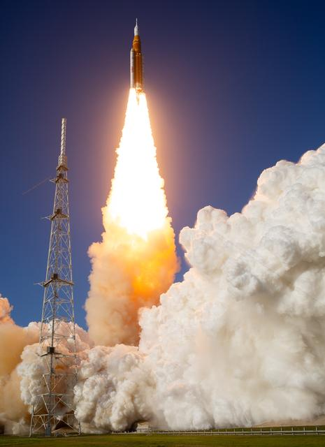
images.nasa.gov · NHQ202604010261Closer to home
In October 2007, Dr Sheikh Muszaphar Shukor became the first Malaysian in space, spending about ten days on the International Space Station. He lived in the same kind of cabin air that NASA's fire research works to keep safe. [10]
Curious what would happen to a flame in the cabin air Dr Sheikh Muszaphar breathed on the ISS?
Try Will It Burn?04 · The research
Fire behaves too differently in space to rely on Earth tests, so NASA burns materials on the ISS and even in an uncrewed cargo ship. Flamma brings eight of these investigations together.
Still unknown: fire at Moon or Mars gravity, and at spacesuit conditions. NASA tests suggest flames may survive at the lowest oxygen levels near Moon gravity, which is why NASA plans to test materials on the Moon itself. [7] Until then, ACME's E-FIELD Flames experiment on the ISS shows one way to imitate gravity: an electric field pushes on the charged particles in a flame, creating a force on it "just as buoyancy does in a gravitational field". [11]
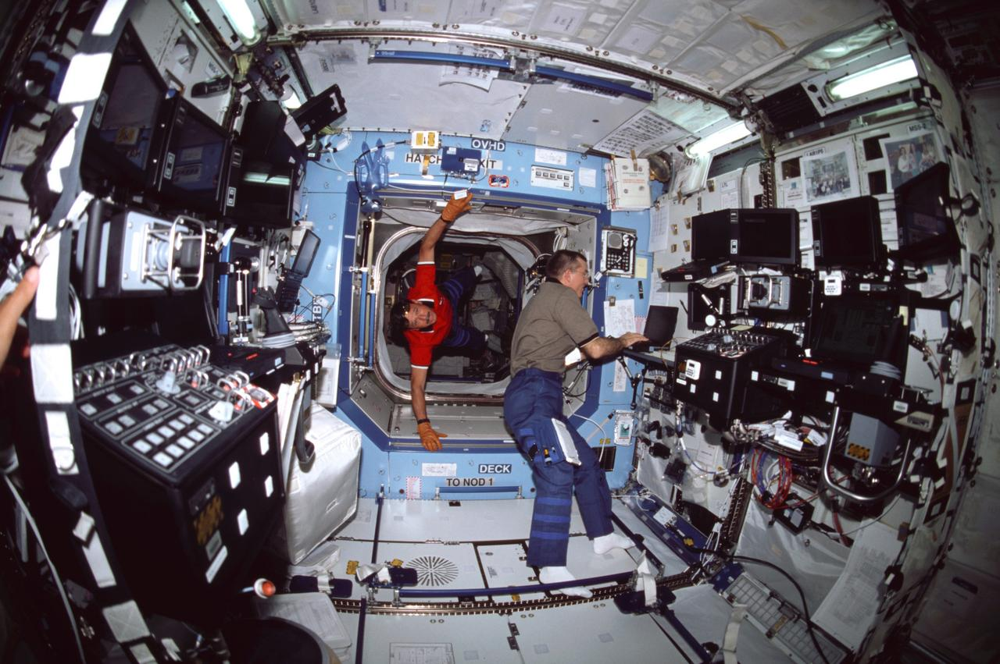
images.nasa.gov · 020158905 · Explore
Search decades of microgravity combustion research in plain English.
Set the conditions of a fire scenario in space, and see what NASA's experiments say.
Moon base and rover use NASA's expected habitat air: 30% oxygen or more, at 10.2 psi (0.7 bar) or less. NASA hasn't published a Mars habitat atmosphere yet, so Mars base uses the same air with Mars gravity.
Photos: images.nasa.gov · iss042e013697 · art002e012702 · iss017e008532 · 20250331-03 (JAXA/Toyota) · PIA14832 · iss064e004158
Set the conditions of your fire scenario
"Any" = unknown, ignored in the ranking. For sliders, tick its "Any" box.
Illustration based on general combustion trends. Results come from NASA data.
The combustion investigations behind Flamma, flown on the ISS or a Cygnus cargo ship. Data from NASA's Physical Sciences Informatics (PSI) system.
Cleaned from NASA's PSI tables. Each file keeps the PSI ID and the original notes.
Not used in the "Will It Burn?" ranking (but shown here and used by Ask): CFI-G inverse flames (154 tests; oxygen flows from the burner, not the room, so it isn't a room oxygen level), ACME BRE (daily summaries, not individual tests), BASS (NASA's table lists samples only, no conditions or outcomes per test) and SPICE (smoke-point flames that all burned on purpose). Outcomes are our reading of each table; see each test's notes for the original wording.
Pick two or more investigations, then press Compare.
Hardware is from NASA's metadata; samples, what changed between tests and sensors are summarised from each investigation's NASA objective, approach and test tables.
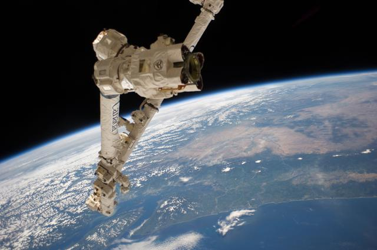
Back on Earth
Fire safety technology built for space has also made firefighting on Earth safer.
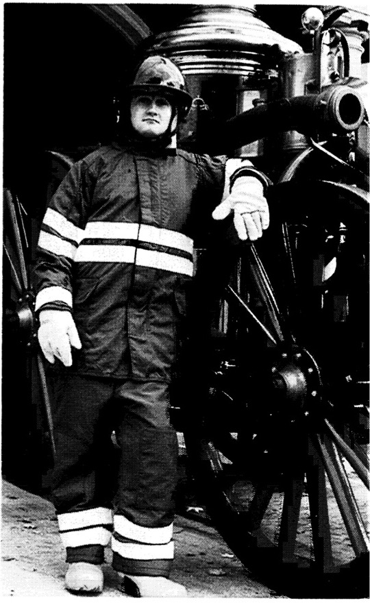
NASA Spinoff 1982, p. 111 · NTRS40% lighter firefighter gear
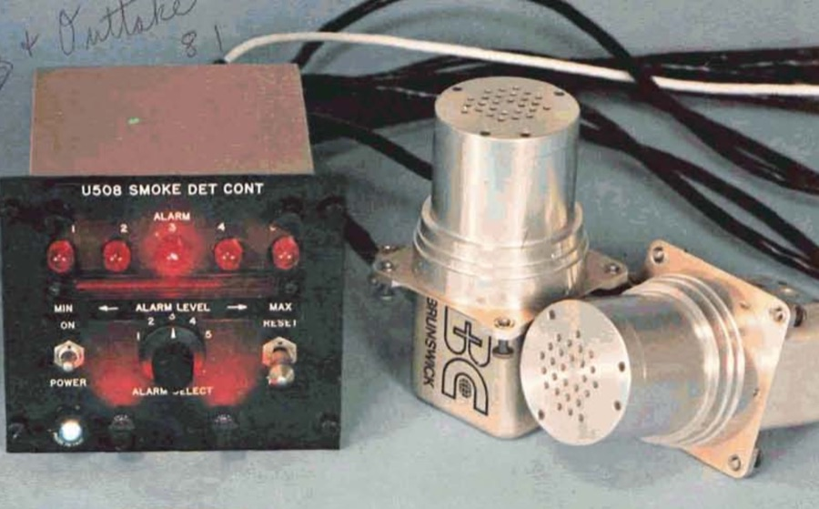
NASA Spinoff 1978 · NTRSBefore flames or smoke appear
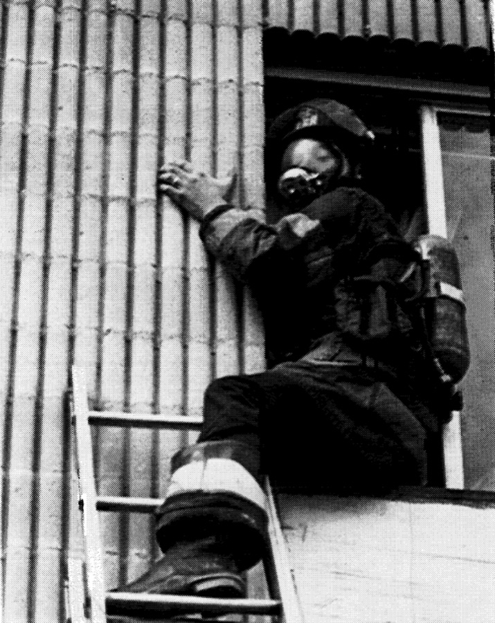
NASA Spinoff 1976, p. 66 · NTRS13 lb lighter breathing pack
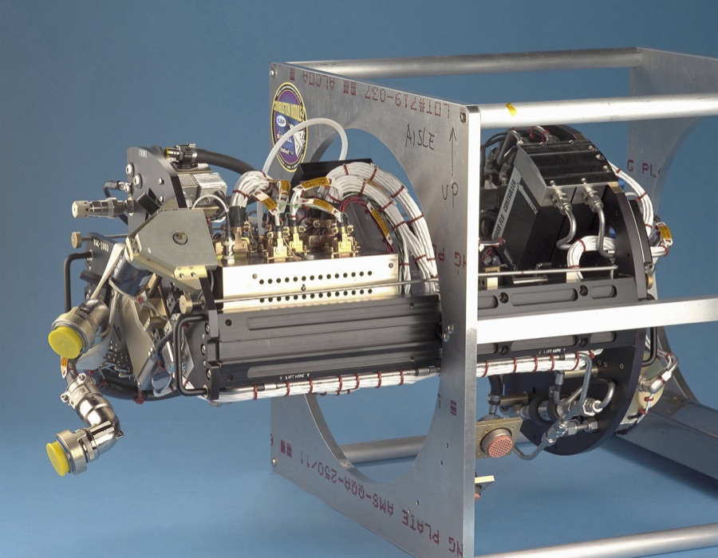
Water Mist experiment hardware · images.nasa.gov 0103199Water + nitrogen instead of CO₂
About 60% of house fires in Malaysia are caused by electrical problems, says the Fire and Rescue Department (Bomba). [8] In US homes, the item that most often catches fire first in an electrical fire is wire and cable insulation (30%). [9] Insulated wire is exactly what JAXA's FLARE experiment burns in space, including wires given too much current on purpose to imitate a short circuit.
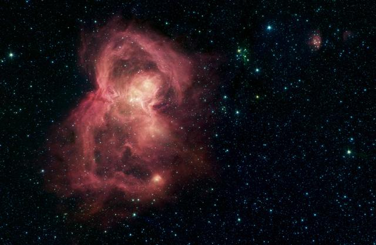
Investigations
Why NASA burns things on the International Space Station, and what it is testing now.
01 · Why study fire in space?
Combustion powers electricity, transport, glass and steel making, but it also produces greenhouse gases, soot and wildfires. On Earth, gravity makes hot flame gases rise and hides the details scientists want to study. On the ISS, with gravity removed, flames become simpler to study, and the station is also a test-bed for spacecraft fire risk.
02 · Why gravity matters
A typical flame is about 2,300 K, while the room is about 300 K. That makes the hot gas about eight times less dense over just a centimetre. On Earth, this pushes the flame upward and makes it flicker. Without gravity, that upward flow disappears, and a flame can be studied as a much simpler, one-dimensional system.
03 · Current experiments
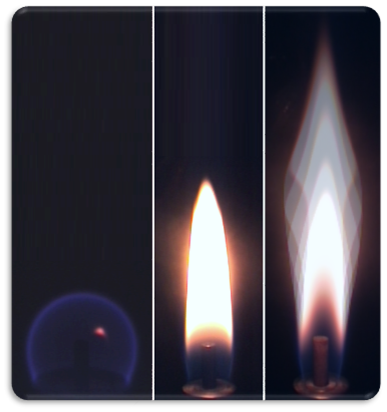
The first combustion experiment on the Moon: will materials burn at lower oxygen at 1/6 gravity?
NASA pageFive ISS studies of how solid materials ignite, burn and go out, from flat acrylic sheets to thick spheres.
NASA page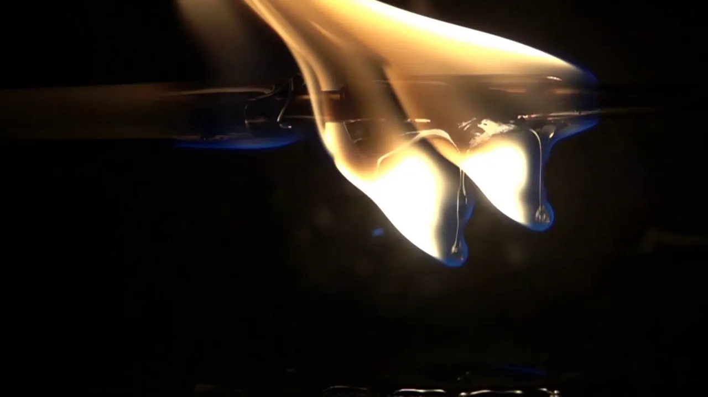
A JAXA-led project predicting how flammable materials are in space from tests on the ground.
Other investigations04 · Where the experiments happen
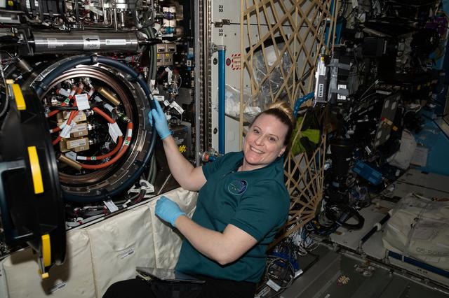
images.nasa.gov · iss064e040971Launched in 2008 to the ISS's U.S. laboratory, Destiny, it is the only rack on the ISS just for combustion, with a 100-litre combustion chamber. It provides up to 90% of the hardware an experiment needs, for fire prevention, detection and suppression, flame spread, soot and more. FLEX and CFI-G ran here.
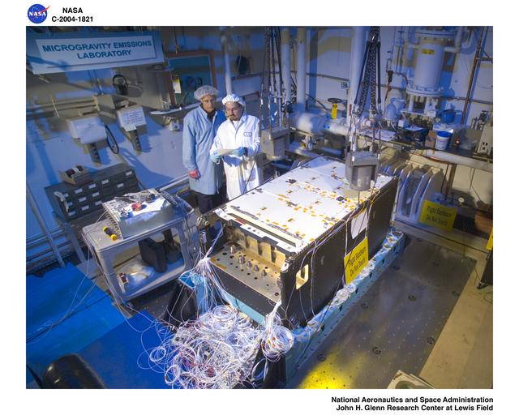
CIR ground test unit · GRC-2004-C-01821Both racks of the Fluids and Combustion Facility were developed at NASA Glenn in Cleveland, Ohio, where a ground copy of the CIR was tested before flight. Both are still run remotely from Glenn. Its partner, the Fluids Integrated Rack (FIR), launched in 2009, is a large optics bench for fluid experiments such as boiling, two-phase flow and life support.
05 · Archived experiments
Where to next
Source: NASA Glenn Research Center, Combustion Science ↗, with its FM2 and SoFIE pages.
Fire safety research by other space agencies, beyond NASA's investigations in Flamma's data.
JAXA · Japan Aerospace Exploration Agency
Flammability Limits at Reduced-g Experiment, in the Kibo module on the ISS (since 2022)
FLARE burns solid materials, from paper and acrylic to insulated wires, in a slow airflow and finds the lowest oxygen level at which a flame keeps spreading. Its goal is a new international standard that predicts how flammable a material is in space from tests on Earth. JAXA's module can test up to 45% oxygen at low pressure, like planned Moon habitats, and found that an overloaded wire can ignite violently in microgravity.
Courtesy of JAXA. More agencies' investigations can be added here.
Made from the investigation's data table below. Hover a bar or dot to see its numbers.
Answers come from this investigation's table and NASA's documents about it.